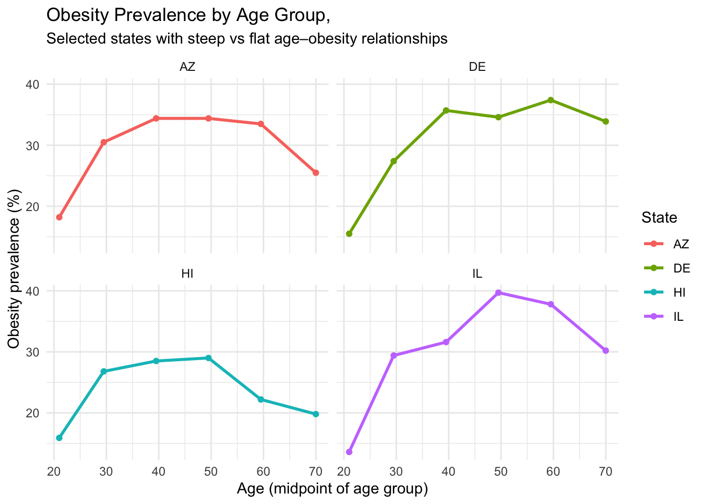
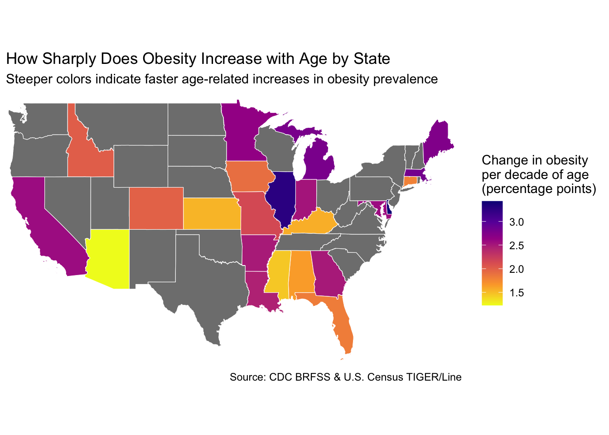

Code
library(tidyverse)
library(janitor)
library(scales)
# library(broom) # uncomment if you prefer broom-based modelingYour Names
Data and Question
Our specific subquestion in this section is:
Are there states where obesity rates change (rise or fall) more sharply with age with respect to other states?
We operationalize this by:
Computing obesity prevalence by state × age group
Converting age groups to a numeric age midpoint
Fitting a simple linear model of obesity prevalence vs. age midpoint within each state
Comparing the slope across states (steeper slope = sharper change with age)
[1] "yearstart" "yearend"
[3] "locationabbr" "locationdesc"
[5] "datasource" "class"
[7] "topic" "question"
[9] "data_value_unit" "data_value_type"
[11] "data_value" "data_value_alt"
[13] "data_value_footnote_symbol" "data_value_footnote"
[15] "low_confidence_limit" "high_confidence_limit"
[17] "sample_size" "total"
[19] "age_years" "education"
[21] "sex" "income"
[23] "race_ethnicity" "geolocation"
[25] "classid" "topicid"
[27] "questionid" "datavaluetypeid"
[29] "locationid" "stratificationcategory1"
[31] "stratification1" "stratificationcategoryid1"
[33] "stratificationid1" Rows: 50,000
Columns: 33
$ yearstart <dbl> 2011, 2011, 2011, 2011, 2011, 2011, 2011, 2…
$ yearend <dbl> 2011, 2011, 2011, 2011, 2011, 2011, 2011, 2…
$ locationabbr <chr> "AL", "AL", "AL", "AL", "AL", "AL", "AL", "…
$ locationdesc <chr> "Alabama", "Alabama", "Alabama", "Alabama",…
$ datasource <chr> "Behavioral Risk Factor Surveillance System…
$ class <chr> "Obesity / Weight Status", "Obesity / Weigh…
$ topic <chr> "Obesity / Weight Status", "Obesity / Weigh…
$ question <chr> "Percent of adults aged 18 years and older …
$ data_value_unit <lgl> NA, NA, NA, NA, NA, NA, NA, NA, NA, NA, NA,…
$ data_value_type <chr> "Value", "Value", "Value", "Value", "Value"…
$ data_value <dbl> 34.8, 35.8, 32.3, 34.1, 28.8, 16.3, 27.8, 3…
$ data_value_alt <dbl> 34.8, 35.8, 32.3, 34.1, 28.8, 16.3, 27.8, 3…
$ data_value_footnote_symbol <chr> NA, NA, NA, NA, NA, NA, NA, NA, NA, NA, NA,…
$ data_value_footnote <chr> NA, NA, NA, NA, NA, NA, NA, NA, NA, NA, NA,…
$ low_confidence_limit <dbl> 31.3, 31.1, 28.0, 29.7, 25.4, 12.6, 14.4, 3…
$ high_confidence_limit <dbl> 38.5, 40.8, 36.8, 38.8, 32.5, 20.9, 46.9, 4…
$ sample_size <dbl> 1367, 757, 861, 785, 1125, 356, 58, 598, 86…
$ total <lgl> NA, NA, NA, NA, NA, NA, NA, NA, NA, NA, NA,…
$ age_years <chr> NA, NA, NA, NA, NA, "18 - 24", NA, "25 - 34…
$ education <chr> NA, NA, NA, NA, NA, NA, NA, NA, NA, NA, NA,…
$ sex <chr> NA, NA, NA, NA, NA, NA, NA, NA, NA, NA, NA,…
$ income <chr> "$15,000 - $24,999", "$25,000 - $34,999", "…
$ race_ethnicity <chr> NA, NA, NA, NA, NA, NA, "2 or more races", …
$ geolocation <chr> "\n, \n(32.840571122, -86.631860762)", "\n…
$ classid <chr> "OWS", "OWS", "OWS", "OWS", "OWS", "OWS", "…
$ topicid <chr> "OWS1", "OWS1", "OWS1", "OWS1", "OWS1", "OW…
$ questionid <chr> "Q036", "Q036", "Q036", "Q036", "Q036", "Q0…
$ datavaluetypeid <chr> "VALUE", "VALUE", "VALUE", "VALUE", "VALUE"…
$ locationid <chr> "01", "01", "01", "01", "01", "01", "01", "…
$ stratificationcategory1 <chr> "Income", "Income", "Income", "Income", "In…
$ stratification1 <chr> "$15,000 - $24,999", "$25,000 - $34,999", "…
$ stratificationcategoryid1 <chr> "INC", "INC", "INC", "INC", "INC", "AGEYR",…
$ stratificationid1 <chr> "INC1525", "INC2535", "INC3550", "INC5075",…library(tidyverse)
obesity_age <- obesity_raw %>%
filter(
class == "Obesity / Weight Status",
question == "Percent of adults aged 18 years and older who have obesity",
stratificationcategory1 == "Age (years)",
!is.na(age_years),
!is.na(data_value),
locationabbr != "US" # drop national aggregate
) %>%
select(
state_abbr = locationabbr,
state_name = locationdesc,
year = yearstart,
age_group = age_years,
obesity_pct = data_value
)
glimpse(obesity_age)Rows: 2,040
Columns: 5
$ state_abbr <chr> "AL", "AL", "AL", "AL", "AL", "AL", "AK", "AK", "AK", "AK"…
$ state_name <chr> "Alabama", "Alabama", "Alabama", "Alabama", "Alabama", "Al…
$ year <dbl> 2011, 2011, 2011, 2011, 2011, 2011, 2011, 2011, 2011, 2011…
$ age_group <chr> "18 - 24", "25 - 34", "35 - 44", "45 - 54", "55 - 64", "65…
$ obesity_pct <dbl> 16.3, 35.2, 35.5, 38.0, 36.4, 27.1, 19.8, 23.5, 29.5, 29.2…# A tibble: 6 × 2
age_group age_mid
<chr> <dbl>
1 18 - 24 21
2 25 - 34 29.5
3 35 - 44 39.5
4 45 - 54 49.5
5 55 - 64 59.5
6 65 or older 70 library(broom)
state_slopes <- obesity_year %>%
group_by(state_abbr, state_name) %>%
filter(n() >= 3) %>% # make sure a state has enough age groups
do(tidy(lm(obesity_pct ~ age_mid, data = .))) %>%
filter(term == "age_mid") %>%
ungroup() %>%
mutate(
slope_per_decade = estimate * 10
) %>%
arrange(desc(slope_per_decade))
head(state_slopes)# A tibble: 6 × 8
state_abbr state_name term estimate std.error statistic p.value
<chr> <chr> <chr> <dbl> <dbl> <dbl> <dbl>
1 DE Delaware age_mid 0.343 0.142 2.41 0.0734
2 IL Illinois age_mid 0.327 0.189 1.73 0.159
3 MA Massachusetts age_mid 0.282 0.160 1.77 0.152
4 MI Michigan age_mid 0.278 0.145 1.92 0.128
5 ME Maine age_mid 0.274 0.171 1.60 0.185
6 MN Minnesota age_mid 0.264 0.140 1.88 0.134
# ℹ 1 more variable: slope_per_decade <dbl># A tibble: 10 × 8
state_abbr state_name term estimate std.error statistic p.value
<chr> <chr> <chr> <dbl> <dbl> <dbl> <dbl>
1 DE Delaware age_mid 0.343 0.142 2.41 0.0734
2 IL Illinois age_mid 0.327 0.189 1.73 0.159
3 MA Massachusetts age_mid 0.282 0.160 1.77 0.152
4 MI Michigan age_mid 0.278 0.145 1.92 0.128
5 ME Maine age_mid 0.274 0.171 1.60 0.185
6 MN Minnesota age_mid 0.264 0.140 1.88 0.134
7 MD Maryland age_mid 0.258 0.147 1.76 0.153
8 CA California age_mid 0.257 0.140 1.83 0.141
9 IN Indiana age_mid 0.252 0.136 1.85 0.137
10 GA Georgia age_mid 0.250 0.179 1.39 0.236
# ℹ 1 more variable: slope_per_decade <dbl># A tibble: 10 × 8
state_abbr state_name term estimate std.error statistic p.value
<chr> <chr> <chr> <dbl> <dbl> <dbl> <dbl>
1 HI Hawaii age_mid 0.0102 0.143 0.0714 0.947
2 AZ Arizona age_mid 0.123 0.164 0.748 0.496
3 MS Mississippi age_mid 0.146 0.181 0.805 0.466
4 KS Kansas age_mid 0.153 0.150 1.02 0.365
5 KY Kentucky age_mid 0.156 0.183 0.850 0.443
6 AL Alabama age_mid 0.164 0.250 0.655 0.548
7 CT Connecticut age_mid 0.179 0.115 1.56 0.194
8 FL Florida age_mid 0.182 0.147 1.23 0.284
9 IA Iowa age_mid 0.190 0.186 1.03 0.363
10 AK Alaska age_mid 0.195 0.143 1.37 0.244
# ℹ 1 more variable: slope_per_decade <dbl>interesting_states <- c(
top10_states$state_abbr[1],
top10_states$state_abbr[2],
bottom10_states$state_abbr[1],
bottom10_states$state_abbr[2]
)
obesity_year %>%
filter(state_abbr %in% interesting_states) %>%
ggplot(aes(x = age_mid, y = obesity_pct, color = state_abbr)) +
geom_line(linewidth = 1) +
geom_point() +
facet_wrap(~ state_abbr) +
labs(
title = paste("Obesity Prevalence by Age Group,"),
subtitle = "Selected states with steep vs flat age–obesity relationships",
x = "Age (midpoint of age group)",
y = "Obesity prevalence (%)",
color = "State"
) +
theme_minimal()
library(tidycensus)
library(sf)
library(dplyr)
library(ggplot2)
library(scales)
library(tigris)
options(tigris_use_cache = TRUE)
states_sf <- states(cb = TRUE, year = 2022) %>%
filter(!STUSPS %in% c("AK", "HI", "PR")) %>%
transmute(
state_abbr = STUSPS,
state_name = NAME,
geometry
)
map_data <- states_sf %>%
left_join(
state_slopes,
by = "state_abbr"
)
summary(map_data$slope_per_decade) Min. 1st Qu. Median Mean 3rd Qu. Max. NA's
1.226 1.812 2.436 2.261 2.593 3.427 29 ggplot(map_data) +
geom_sf(aes(fill = slope_per_decade), color = "white", linewidth = 0.2) +
coord_sf(
xlim = c(-125, -66),
ylim = c(24, 50),
expand = FALSE
) +
scale_fill_viridis_c(
name = "Change in obesity\nper decade of age\n(percentage points)",
option = "plasma",
direction = -1,
labels = scales::label_number(accuracy = 0.1)
) +
labs(
title = paste("How Sharply Does Obesity Increase with Age by State"),
subtitle = "Steeper colors indicate faster age-related increases in obesity prevalence",
caption = "Source: CDC BRFSS & U.S. Census TIGER/Line"
) +
theme_minimal() +
theme(
axis.text = element_blank(),
axis.ticks = element_blank(),
panel.grid = element_blank(),
plot.margin = margin(5, 5, 5, 5),
aspect.ratio = 0.6
)